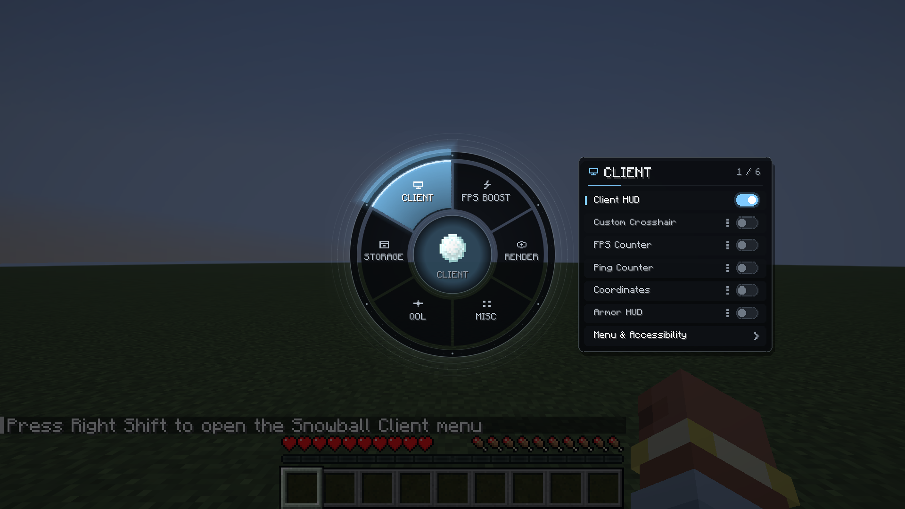
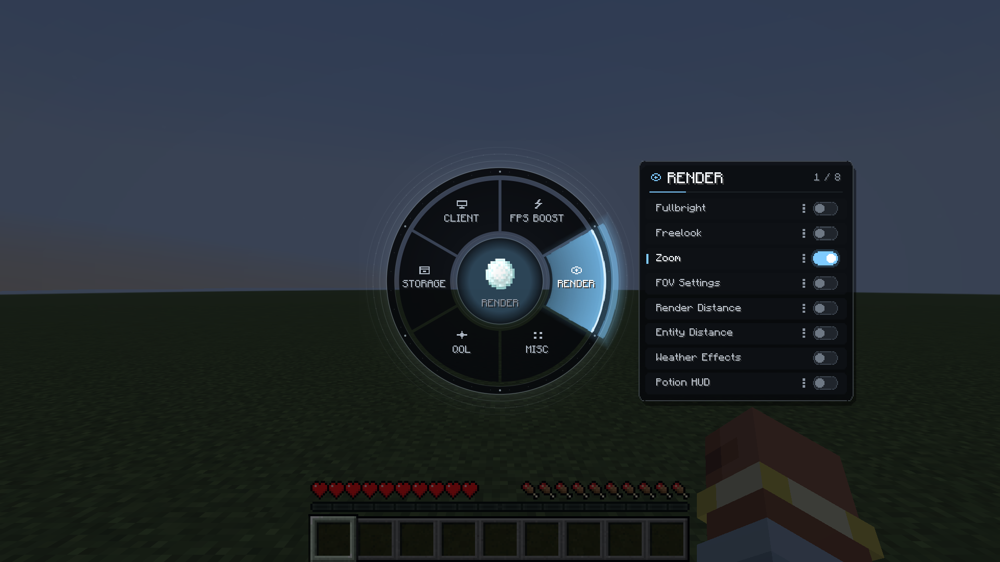

SNOWBALL CLIENT
A fast, clean Minecraft: Java Edition launcher and client. Isolated instances, one-click performance mods and a radial in-game menu for everything else.

IN GAME
Everything one key away
Press Right Shift to open the radial menu. Pick a category, toggle a module, open its settings. Settings are saved per instance.
Keystrokes and CPS
See movement keys, mouse buttons and clicks per second on your HUD.
Zoom and Freelook
Smooth hold-to-zoom, and look around without turning your player.
Waypoints
Save locations per world and server, with on-screen markers and death points.
Performance profiles
Balanced, FPS Boost, Maximum FPS or Visual Quality, with Sodium-based mod stacks.
Fullbright, FOV, weather
Custom FOV, render and entity distance, and a weather toggle for clearer views.
HUD you control
FPS, ping, coordinates, armour, potions, custom crosshair, all movable and scalable.
Profiles and screenshots
Save module setups, switch mod sets, browse screenshots and resource packs.
Chat and notifications
Chat timestamps, server info, session timer and low durability warnings.
LAUNCHER
Instances that never conflict
Each instance has its own version, mods, worlds and settings, so your PvP setup never breaks your modpack.
- Fabric, Quilt, Forge and NeoForge installed for you
- Java handled automatically, or pick your own per instance
- Mod manager that catches duplicates and version conflicts
- Microsoft sign-in on Microsoft's own login page
- Crash detection and live game logs

DOWNLOAD
Get Snowball Client
Version 1.0.0 for Windows 10 and 11 (64-bit). You need a Microsoft account that owns Minecraft: Java Edition.
Windows may show "Windows protected your PC" because the app is new and not yet code-signed. Choose More info, then Run anyway.
FAQ
Questions
Is Snowball Client allowed on servers?
Snowball Client only adds visual, interface and quality-of-life features. It has no hacks such as X-ray, ESP, reach, aim assist or auto clickers. Some servers ban all client mods, so always follow each server's rules.
Do you see my Microsoft password?
No. You sign in on Microsoft's own page. The launcher only receives a sign-in token from Microsoft, which is encrypted on your computer and never sent to us.
Which Minecraft versions are supported?
The launcher runs any Java Edition version. The Snowball Client mod itself is built for Minecraft 26.2 with Fabric.
Does it cost anything?
No. Snowball Client is free. You still need to own Minecraft: Java Edition.